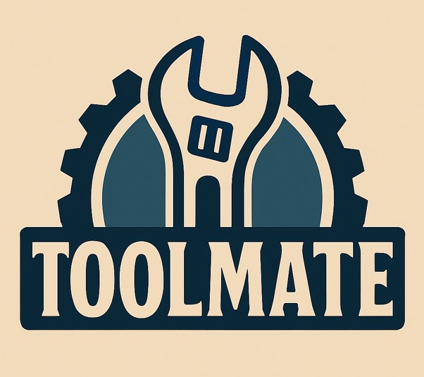

Оренда інструментів між людьми та бізнесом. Без посередників.
Перейти в Бот ->✅ Реєструєшся — модератор активує акаунт
🛠️ Додаєш інструмент — модератор публікує оголошення
📩 Отримуєш заявку та підтверджуєш оренду
📄 Бот генерує договір — передаєш інструмент
💰 Отримуєш оплату та закриваєш угоду
✅ Реєструєшся — модератор активує акаунт
📍 Шукаєш інструмент на карті поруч
📅 Вибираєш дати в календарі — подаєш заявку
📄 Отримуєш підтвердження та автоматичний договір
🧰 Забираєш інструмент і повертаєш — угода закривається
— Реєстрація через модератора — перевірені користувачі, без анонімних заявок
— Додавання інструментів через модератора — лише реальні оголошення без фейків
— Карта з точками видачі — знаходь інструмент поруч і домовляйся про місце передачі
— Календар бронювань — повна картина зайнятості кожного інструменту в реальному часі
— Нотифікації — сповіщення про нові заявки, зміну статусів та нагадування про повернення
— Угоди та їх статуси — прозорий процес від заявки до закриття оренди
— Генерація договору — автоматичне формування акту приймання-передачі на основі угоди
— Через Telegram — швидко, мобільно і без зайвих додатків
Як відбувається реєстрація? Надсилаєш заявку в боті — модератор перевіряє та активує акаунт. Лише верифіковані користувачі можуть орендувати та здавати інструменти.
Як додати свій інструмент? Заповнюєш картку інструменту в боті — модератор перевіряє оголошення та публікує його. Жодних фейків і дублів.
Як забронювати інструмент? Шукаєш інструмент за допомогою фільтрів та на мапі, відкриваєш календар і вибираєш вільні дати. Орендодавець підтверджує — угода створюється автоматично.
Що таке угода і що в неї за статуси? Угода — це оренда між двома сторонами. Вона проходить статуси: нова → підтверджена → активна → закрита. На кожному етапі обидві сторони отримують нотифікації.
Чи є договір? Так. На основі угоди бот автоматично генерує акт приймання-передачі з деталями сторін, описом інструменту та умовами оренди, а також акт повернення.
Це безпечно? Так. Всі користувачі верифіковані модератором, кожна оренда фіксується угодою з автоматичним договором. Рекомендуємо фото/відео фіксацію стану інструменту під час видачі та повернення.
Скільки це коштує? Бот безкоштовний — платиш лише за оренду інструменту напряму орендодавцю.
Чи потрібна застава? За домовленістю сторін і як зазначено в оголошенні. Сервіс не зберігає заставу — розрахунки напряму між користувачами.
Де передають і повертають інструмент? У точці видачі, зазначеній на мапі. Перевіряєте комплектацію, фіксуєте стан — договір вже згенерований у боті.
Як залишити відгук? Після закриття угоди прямо в боті — рейтинг і коментар до завершеної оренди.
Де працює сервіс? Локально у вашому місті через Telegram — шукайте інструменти поруч або здавайте свої в оренду.